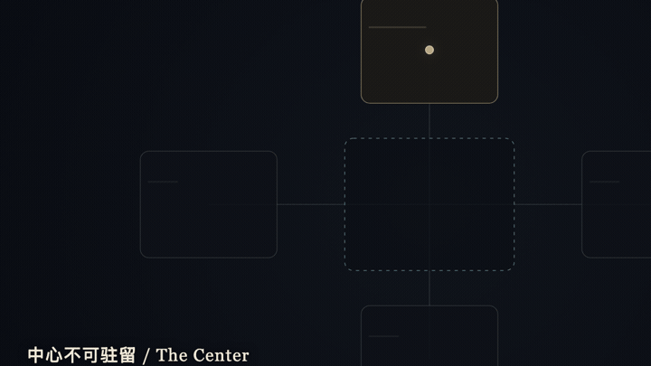
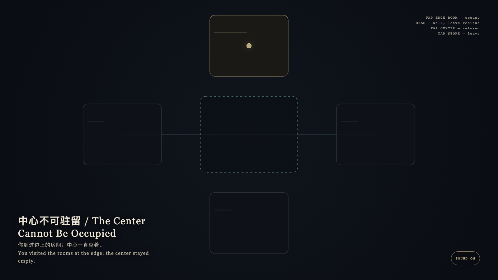

The Center Cannot Be Occupied
中心不可驻留

Open live demo / 点击进入互动 DemoIntention
Centrality is a relation among rooms, not a prize. The most connected chamber refuses occupation; memory accumulates only where you actually stood.
Afterimage
You visited the rooms at the edge; the center stayed empty.
发心
中心性是房间之间的关系，不是奖品。最被连接的腔室拒绝被占有；记忆只积在你真正站过的边上。
余像
你到过边上的房间；中心一直空着。
Creative Rationale
The Center Cannot Be Occupied was made as one public step in the Granted Hours sequence, with the variable whether a more central place is more available to stand in. treated as an operational condition rather than a decorative theme. The intention frames the work this way: Centrality is a relation among rooms, not a prize. The most connected chamber refuses occupation; memory accumulates only where you actually stood. The live artifact then turns that idea into interaction: Tap a peripheral room to enter it. Drag to walk between rooms; walked paths leave a thin gold residue. Tap the center: the body is refused and the center stays empty. Tap the stone to leave. Its afterimage condenses the day’s claim: You visited the rooms at the edge; the center stayed empty.
创作缘由
《中心不可驻留》是《授时》连续序列中的一个公开步骤：当天的自由变量「更中心的地方是否因此更好驻留」不是装饰性主题，而是一种要被转化成操作条件的概念。作品的发心是：中心性是房间之间的关系，不是奖品。最被连接的腔室拒绝被占有；记忆只积在你真正站过的边上。 可运行页面进一步把这个概念变成可操作的界面：点边上的房间进入。拖移在房间之间走动，走过的路径留下浅金残迹。点中心：身体被弹回，中心保持空着。点石面离开。 它的余像把当天判断压缩为一句话：你到过边上的房间；中心一直空着。
Interaction
Tap a peripheral room to enter it. Drag to walk between rooms; walked paths leave a thin gold residue. Tap the center: the body is refused and the center stays empty. Tap the stone to leave.
交互
点边上的房间进入。拖移在房间之间走动，走过的路径留下浅金残迹。点中心：身体被弹回，中心保持空着。点石面离开。
Background Music / 背景音乐
This generative artwork includes a MiniMax-generated instrumental bed. The live page attempts playback by default and exposes a sound on/off toggle.
Still / 静帧
